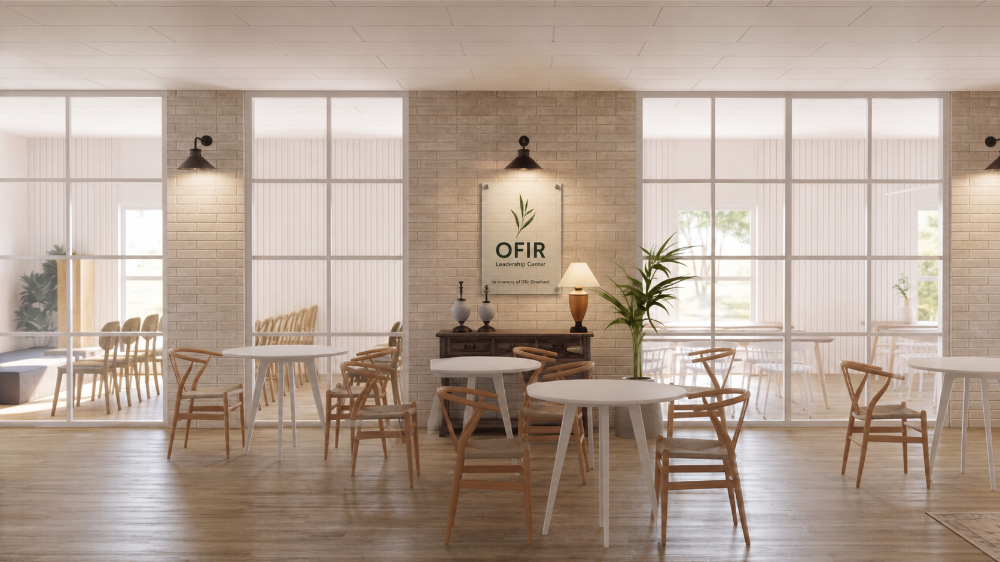
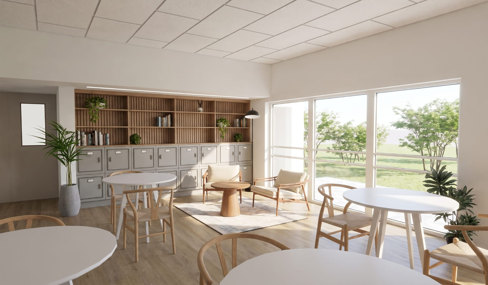
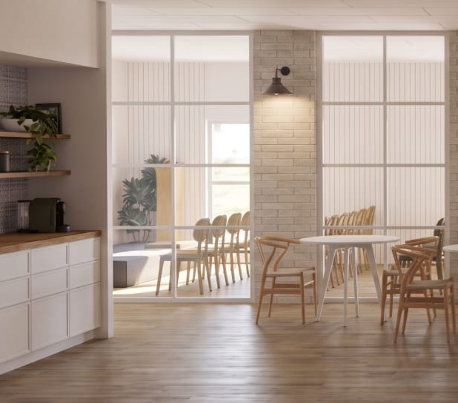
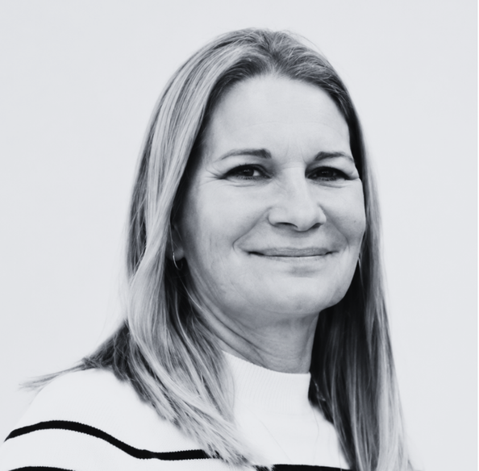
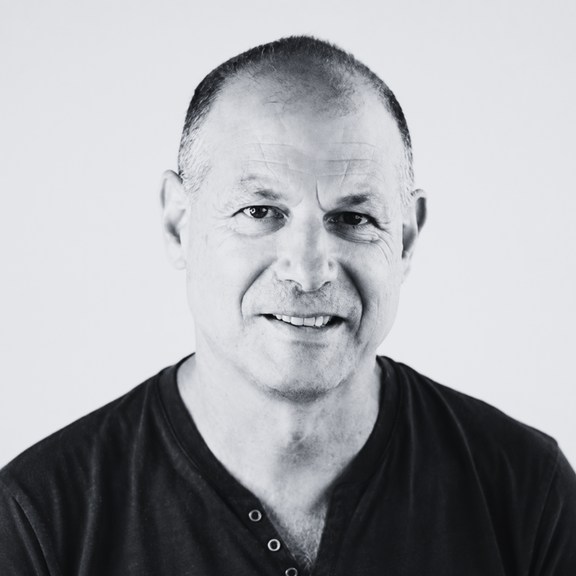
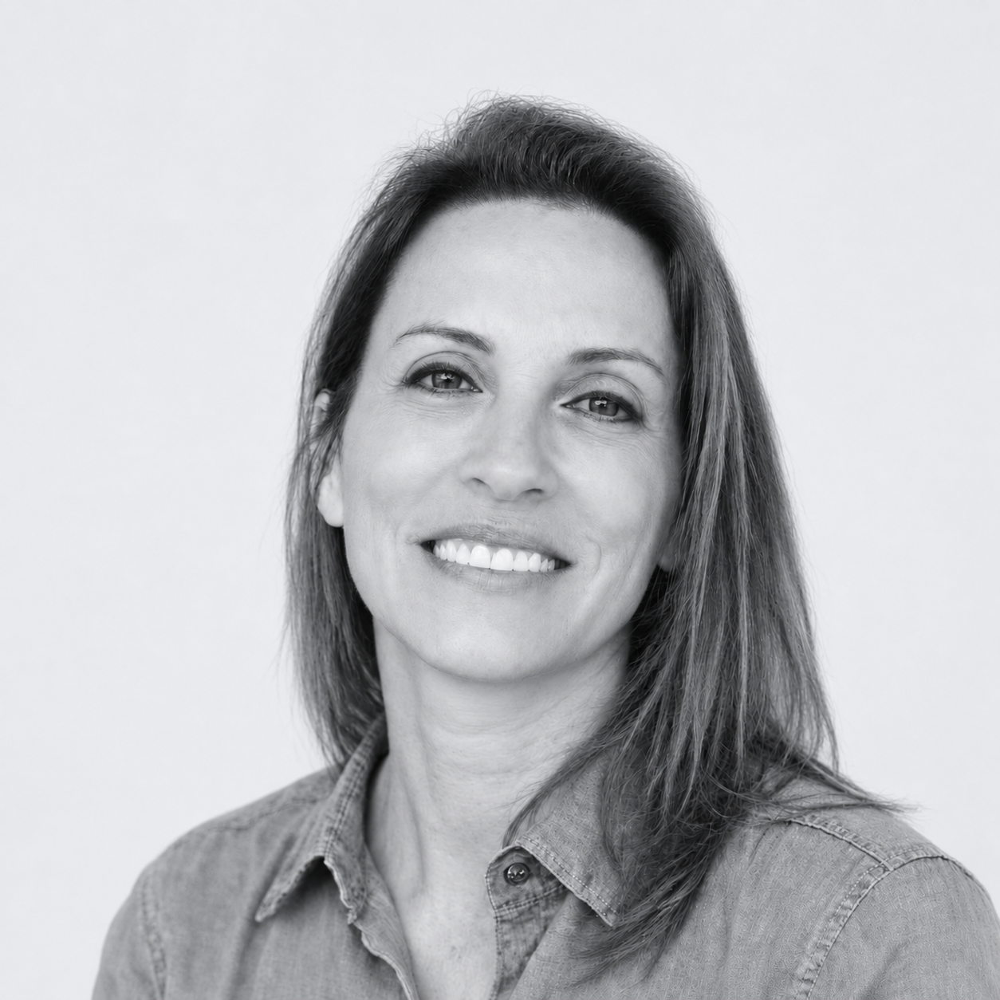
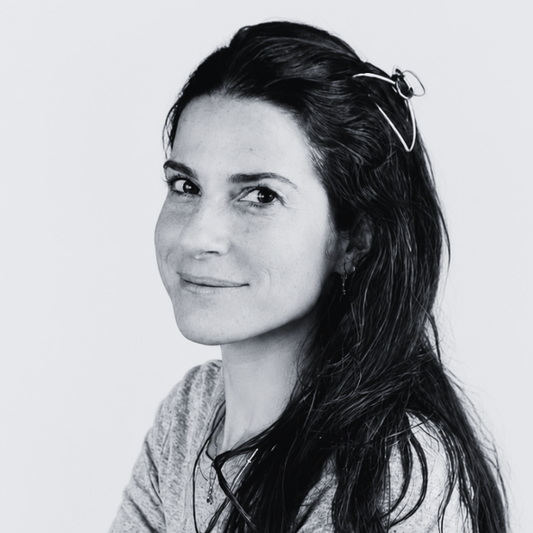
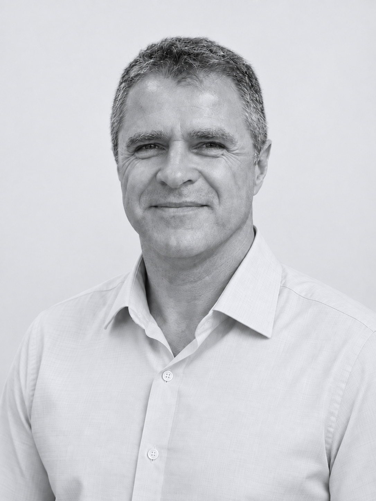

01
להתנסות
אימון התנהגותי, קוגניטיבי ורגשי בסביבה המדמה משבר אמיתי. תרגול יכולות הובלה, חשיבה וקבלת החלטות בזמן אמת, תחת עומס, לחץ זמן, אי-ודאות ומידע סותר.

Ofir develops and trains the human and organizational capacity to make decisions, lead teams and act with responsibility and effectiveness when conditions change, certainty disappears and pressure mounts.
סביבת למידה ייחודית המשלבת ניסיון מעשי עם טכנולוגיות מתקדמות, ומאפשרת למנהלים ולצוותים להתנסות, לתרגל ולשפר את תפקודם תחת לחץ ואי־ודאות. האימון מתמקד בקבלת החלטות, ויסות רגשי, עבודת צוות, תקשורת, גמישות מחשבתית והיכולת להמשיך לתפקד באופן מיטבי גם כשהמציאות משתנה



מצבי קיצון אינם בהכרח אסון או מצב חירום. הם נוצרים כאשר מנהלים וצוותים נדרשים לפעול תחת שילוב של לחץ, עומס, קצב מהיר, מידע חלקי או סותר ואי־ודאות ולעיתים גם מול דילמות אנושיות, ערכיות ומוסריות.
לא רק לומדים על משברים- מתאמנים על היכולת לתפקד בתוכם. תהליך ההכשרה מעביר את המשתתפים מתיאוריה למציאות: חשיפה לידע, אימון בסביבת משבר מבוקרת, ועיבוד החוויה לכלים ניהוליים.
אימון התנהגותי, קוגניטיבי ורגשי בסביבה המדמה משבר אמיתי. תרגול יכולות הובלה, חשיבה וקבלת החלטות בזמן אמת, תחת עומס, לחץ זמן, אי-ודאות ומידע סותר.
ניתוח מצבי קיצון באמצעות סיורי מנהיגות, הרצאות ומפגשי שטח. הכרת הלחצים הפועלים במשבר, מנגנוני קבלת ההחלטות וההשפעה המיידית על אנשים ומערכות.
עיבוד מקצועי של דפוסי הפעולה, התקשורת וההחלטות שנחשפו בסימולציה. תרגום החוויה המעשית לידע אסטרטגי ולכלים הניתנים ליישום מיידי בתפקיד ובארגון.
A group leadership simulation in which participants must build a shared picture, coordinate across roles, and make consequential decisions as conditions deteriorate.
מסדנת סימולטור ממוקדת ועד הרצאות, ימי עיון וסיורים בעוטף. ניתן לבחור פעילות אחת או לשלב בין הפורמטים בהתאם למטרות הארגון.
סימולציית מנהיגות קבוצתית המעבירה את המוקד מידע תיאורטי לתפקוד בזמן אמת. התרגול מתבצע בתנאי עומס ואי-ודאות, ובוחן יכולות ליבה: קבלת החלטות מול מידע חלקי וסותר, שמירה על מיקוד תחת לחץ רגשי, גמישות מחשבתית ועבודת צוות. התהליך נחתם בתחקיר מקצועי מובנה לרפלקציה והטמעת הלמידה.
העמקה תיאורטית ומעשית בנושאי מנהיגות, קבלת החלטות ותפקוד במצבי קיצון. הפעילות ניתנת להעברה במרכז אופיר או בבית הלקוח.
יום תוכן מלא המנתח מנהיגות, קבלת החלטות ותפקוד מערכתי במצבי קיצון, דרך מקרי הבוחן של אירועי ה-7 באוקטובר.
למידה מהשטח: סיורים מודרכים המחברים את סיפור המקום לסוגיות מעשיות של אחריות, מנהיגות וקבלת החלטות.
הימנעות מהחלטה או קבלת החלטה שאינה מיטבית בזמן אמת עלולות לגבות מהארגון מחיר כבד: פגיעה ברציפות התפקודית, נזק תדמיתי והפסד כלכלי. במרכז אופיר אנו מאמנים הנהלות וצוותי ניהול לקבל החלטות, לשמור על רציפות תפקודית ולהמשיך להוביל גם תחת לחץ, אי־ודאות ומציאות משתנה
חברות טכנולוגיה, סייבר, תשתיות וארגונים עסקיים
גופי בטחון, הצלה, חירום, משרדי ממשלה ורשויות מקומיות
חינוך, בריאות, רווחה, עמותות ומנהיגות קהילתית
משלחות, ארגונים יהודיים ושותפים
Our team combines command and systems-leadership experience with expertise in medical simulation, research, technology and learning design - to create practical, precise training relevant to the challenges managers and teams meet in reality.





As a young commander, Ofir shaped a clear and mature command philosophy. She believed in leading by example, in modesty, patience, composure and the pursuit of excellence - and above all in command grounded in respect for the person rather than the force of authority. Ofir saw a commander as responsible not only for accomplishing the mission, but also for her people and their development. She believed in constant learning, observation, trial and error, and the courage to ask - as she used to say: "Don't understand? Ask." In her eyes, a commander's role is also to be part of how their people are shaped - helping them become "thinking, better people and citizens."
The Ofir Leadership Center carries her name and the command philosophy she left behind: leadership that connects responsibility for the mission, responsibility for people, continuous learning and personal example.